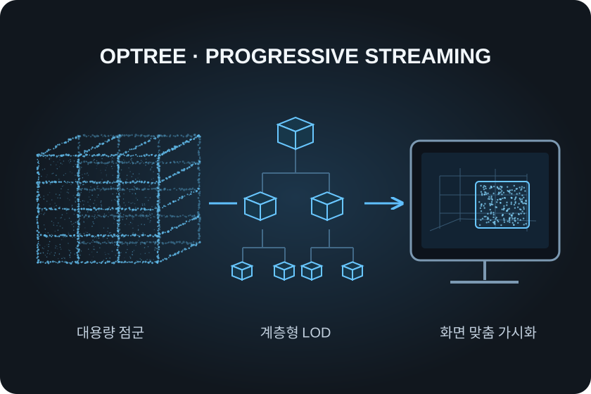
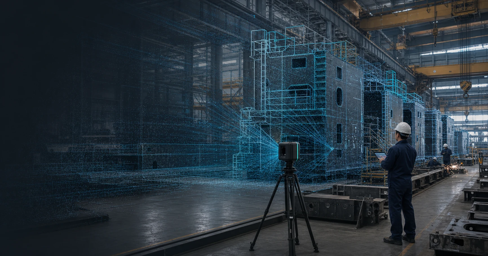
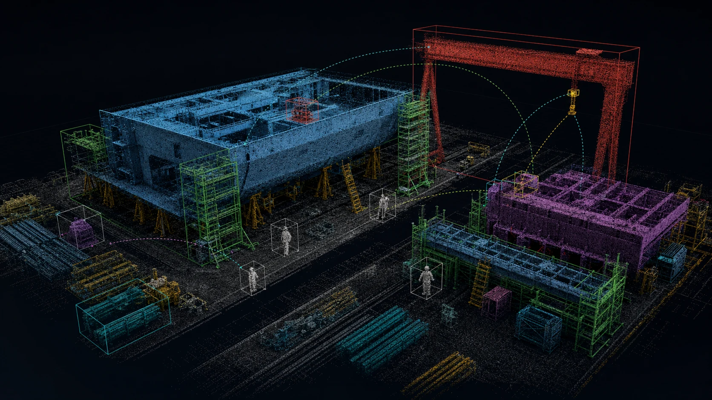
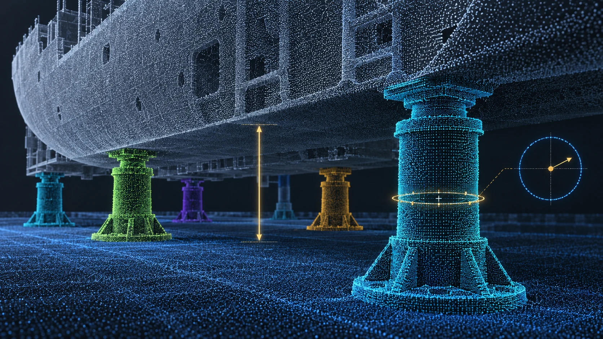
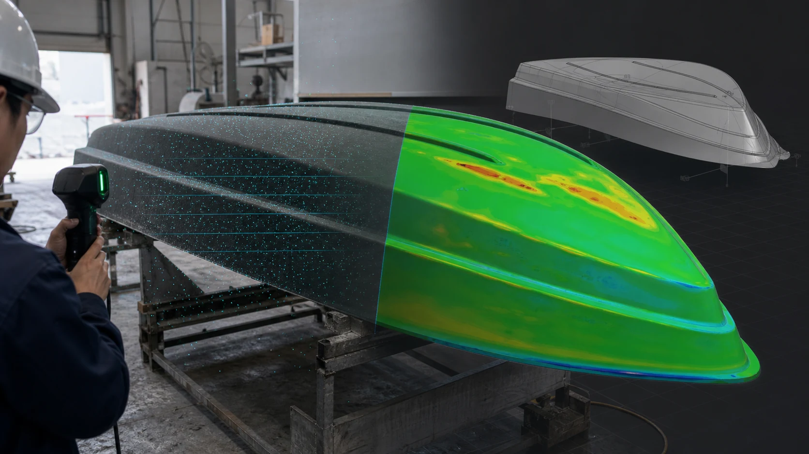

2026대용량 포인트 클라우드
대용량 포인트 클라우드
경량 스트리밍
초대용량 점군을 필요한 곳부터 가볍게 탐색합니다. 자체 Optree LOD 엔진이 전체 형상을 먼저 보여주고, 화면과 확대 수준에 맞는 데이터를 점진적으로 불러옵니다.
전체 형상 탐색→화면에 필요한 데이터→관심 영역 검토
Optree 기술 살펴보기 
조선 현장 디지털화 콘셉트 이미지APPLIED CASES
조선·해양·제조 현장에서 탐색, 검사, 작업 검토로 이어지는 적용사례를 소개합니다.

초대용량 점군을 필요한 곳부터 가볍게 탐색합니다. 자체 Optree LOD 엔진이 전체 형상을 먼저 보여주고, 화면과 확대 수준에 맞는 데이터를 점진적으로 불러옵니다.

복잡한 구조물과 작업공간을 구분하고, 검사와 작업에 필요한 공간 정보를 정리합니다.
대상 컨테이너선 카고홀드 점군
활용 객체 분할·공간 관계·접근성 검토
산출물 검사와 작업의 기준 데이터

블록 하부 스캔에서 지지대와 지면을 구분하고, 개별 지지대의 중심 위치와 설치 높이를 분석합니다.
대상 선박 블록 하부 점군
활용 개별 지지대 분리·원형 단면 추정·위치와 높이 검토
산출물 지지대별 형상 정보와 설치 상태 분석 근거
관련 논문에서는 합성 기준 배치를 사용해 위치 비교 방법을 검증했습니다.
관련 연구 보기 ↗
스캔 형상과 설계 기준을 비교해 품질관리와 공정 개선에 필요한 근거를 제공합니다.
대상 소형선박과 FRP 몰드
활용 기준 정합·편차맵·검사 기준 검토
산출물 품질관리와 개선 근거
계측 데이터에서 스캐폴딩 등 구조물을 구분해 검사 대상 데이터를 정리합니다.
화물창 점군의 객체 탐지, 의미론적 분할과 후처리를 계측 데이터 정리에 연결한 연구입니다.
구조와 형상 특징을 활용해 공간 AI 학습에 필요한 점군 데이터를 구성합니다.
위상 특징과 기하 특징을 결합해 객체 인식에 필요한 형상 정보를 정리합니다. 가시화 스트리밍과 구분되는 학습 데이터 구성 연구입니다.
관련 연구 보기 ↗현장 점군과 로봇 작업공간을 연결해 경로, 충돌, 접근성을 검토합니다.
점군 환경, 비전 센서 조건과 시험편을 바탕으로 용접선 추출과 로봇 작업 가능성을 검토합니다.
SCANNING & ENGINEERING
대상물과 현장 조건, 보유 데이터와 필요한 결과에 맞춰 기술 파일럿과 서비스 범위를 구성합니다.
FIELD CAPTURE
선박 블록, 건축 구조물과 산업 설비의 현장 조건을 검토하고, 스캔 범위와 좌표 기준을 정합니다. 취득한 포인트클라우드를 정합해 후속 분석에 사용할 데이터를 구성합니다.
스캐닝 프로젝트 상담 ↗SHAPE INSPECTION
3D 스캔과 CAD 또는 기준 형상을 비교해 차이를 살펴봅니다. 검사 대상과 판정 기준에 맞춰 편차 분석과 결과 정리 범위를 검토합니다.
검사·형상 비교 상담 ↗DATA RECONSTRUCTION
스캔에서 필요한 형상과 영역을 추출해 Scan-to-CAD 역설계와 라벨 데이터 구축에 활용합니다. 도면·기준 모델·학습 목적에 맞춰 결과물을 정의합니다.
역설계·데이터 구축 상담 ↗POINT CLOUD SUITE
탐색하고, 분류하고, 비교하세요. 현장 업무에 맞춰 포인트클라우드를 활용합니다.
대용량 점군을 경량 가시화하고 여러 데이터와 시점을 함께 검토합니다.
통합 검토 상담 ↗필요한 영역을 선택하고 원본 포인트와 연결된 라벨 데이터를 관리합니다.
데이터 구축 상담 ↗스캔과 기준 형상의 차이를 살펴보고 검사 결과와 분석 근거를 정리합니다.
형상 비교 상담 ↗계층형 LOD와 원본 포인트 연결을 바탕으로 대용량 데이터 탐색과 업무 도구를 연결합니다.
LOD는 화면에 필요한 상세도를 선택하는 기술입니다. Optree는 점군 데이터를 계층 구조로 관리하고 필요한 영역을 점진적으로 전달합니다. Recognition Engine은 기하·위상 특징과 객체 인식을 업무 흐름에 연결합니다.
선박 블록, 카고홀드와 지지대 점군을 탐색하고 객체 분리와 형상·설치 상태 검토에 활용합니다.
관련 조선 사례 보기 ↗건축물·시설물 점군의 경량 탐색과 CAD 기준 비교 등 적용 가능한 업무를 검토합니다. 보유 데이터와 현장 조건을 바탕으로 파일럿 범위를 정의합니다.
건설 데이터 활용 상담 ↗부품·몰드·배관·산업 설비의 스캔 데이터를 정합하고 형상 비교, 역설계와 작업공간 검토에 연결합니다.
제조·플랜트 상담 ↗RESEARCH TO FIELD
Optimize3D는 국립목포해양대학교 최적선박생산기술연구실 OPTLab의 연구 경험을 바탕으로 현장 문제에 맞는 기술 파일럿을 제안합니다.
연구 주제와 적용 근거 살펴보기 ↗스캔 데이터를 보는 것에서,
검사와 작업에 활용하는 것으로.
LET’S CONNECT
검토할 대상과 필요한 결과를 알려주세요. 데이터 상태와 현장 조건에 맞춰 파일럿 범위를 정리합니다.
메일 앱을 사용하지 않는 경우 아래 주소로 문의해 주세요.
optimize3d.xyz@gmail.com